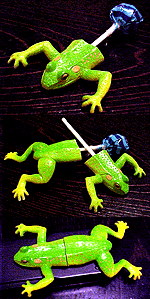
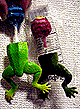
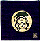
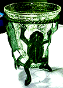

|
イタリアでカエル上半身発見！ カエルチュッパチャップス、上下合体が実現！
 【新潟発=RANA同志記者】平成1年12月27日号でチュッパチャプスをつけて楽しむカエルの下半身の記事が新聞にのっていましたが、上半身を持ってます。数年前にイタリアのお菓子屋さんでゲットしました。食べ終わったチュッパチャプスの棒で、両方を繋ぐと、ちょっと胴体の長い一匹のカエルになります。
 合体すると意外に胴長！【全国かえる奉賛会】これまでカエルの下半身しか報告例がなかったが、今回の発見で上半身の存在が確認された。カエルチュッパチャップスを大量生産している工場に行くと、上下が切断されたカエルが、大量にベルトコンベアーに流れていて、それにパートのおばさんたちが、次々にチュッパチャップスをさし込んでいるのであろうか！まったく素晴らしい光景ではないか！右の写真は、今回のイタリア製カエルチュッパチャップスと、アメリカ製の下半身を並べたものだ。
RANAさんのアドバイス通りに、上下を晴れて合体してみると、なんだか胴体が異常に長いので、まるでヤモリかトカゲのようでもある。この菓子は、カエル部分をなめて溶けてしまうわけではないので、食後も記念品が残る。まったく素晴らしい菓子である。日本人がアレンジすると、ついつい可愛くなりがちだが、さすがに海外の菓子メーカーの破壊的な感覚は、素晴らしいものがあるぞー。 可愛いぞ！カエルコースター！【日本発=kei-f同志記者】今回は縁起物を紹介いたします!!偶然立ち寄った店の小物のコーナーに吸い寄せられるように近づいていくと、すばらしいものを発見したのですっっっ!それは雨の中であろう、木の葉を傘にしてにっこりほほえんでいるカエルではありませんか!!
 用途は恐らくコースターと思われます。しかし、この上にものを置くことはためらわれます…縁起づくしとかかれた添えられている紙には「おめでたい言葉合わせ」として
笑…竹かごの下に犬で「笑」とあります。それぞれ模様違いがあったのですが、カエルは一枚しか残って無く、カエルの人気が伺えました。
【全国かえる奉賛会】大王は、同じ柄の座布団が欲しいぞーっ。風呂敷もいいなー。コースター作った会社は、ネコ、ウサギ、だるまなどの製造工程を休止して、ただちにカエルだけを昼夜兼行で、増産してくれーっ！！
 カエル３匹付きのカエル花瓶！【東京発=けろろん同志記者】買い物の途中で見つけた「カエル花瓶」です。真鍮製？のカエル３匹が、ガラスの容器を支えている形。夏になったら蓮の花でも活けてみようかと思っていますです。
【全国かえる奉賛会】生け花しているカエラーは、さっそく来週のけいこでは、この花瓶を花器に選び、花材はカエルが大好きな蓮の葉や、稲穂を使ってほしいぞ。池坊なら自由花に、草月なら投げ入れにしてみよう！そうして家元に直訴して、カエル花瓶を流派公認の花器に認定してもらおうではないかあ！カエラーの生け花作品投稿を待つ！

カエルサボテンが完成！初回分譲は３体限定か？【福岡発=げこげこ大王直筆】福岡かえる展で話題になった、カエルサボテン（木彫一刀彫り）の販売型が３体完成したとの知らせが、謎のカエル美少女から入った。近く写真撮影した後に、販売を開始するので、みなさん、待っていてクレーっ。彼女は、すごくハードな本業を持っているので、激務の合間をぬい、精神を統一して、カエルサボテンに集中し、製造開始から１カ月で、やっと作り上げた３体だそうだあ。一日も早く見に行きたいが、大王もサラリーマンなので、なかなか撮影時間の日程が合わないのが悩みだが、今週中にはなんとかしたい。
けろテン市場を注目してくれーっ！どんな作品なのか、とっても楽しみであるーっ！待っていてくれー
カエル本が買える！かえる書店を３月開店へ！【全国かえる奉賛会】レアなカエル本は、非カエラーにとっては、無関心かもしれないが、われわれカエラーには、大切な書籍だ。すぐれたカエル本を絶版の淵から救出し、世の中の出版物がすべてカエル関係書籍になるように、かえる書店を準備して、カエラーがカエル本をスグ買えるようにするぞおおおおっ！３月くらいにオープンするからねー。カエル本の画像付き情報を募集！ 【福岡発=ぴのこ同志記者】カエルをテーマにした本がほしいと思って本屋に行っても、まだまだカエル社会ではないので、専用のコーナーを作っている書店がない。カエルな本は、まだまだ世の中全体から見れば、需要が少ないので、出版されても知らないウチに絶版になっていたりします。そんなのは、とっても残念です！いっそ、インターネット上に、カエル書籍を集中的に扱うバーチャル書店を作ってしまうことにしました。
【福岡発=ぴのこ同志記者】カエルをテーマにした本がほしいと思って本屋に行っても、まだまだカエル社会ではないので、専用のコーナーを作っている書店がない。カエルな本は、まだまだ世の中全体から見れば、需要が少ないので、出版されても知らないウチに絶版になっていたりします。そんなのは、とっても残念です！いっそ、インターネット上に、カエル書籍を集中的に扱うバーチャル書店を作ってしまうことにしました。みんなが知っているカエルをテーマにした本を教えて下さい。ある書店と契約して希望のカエル本を、みなさんのもとに配達してくれるようにします。 欲しいカエル本がすぐカエル、今まで知らなかったカエル本に出合えるというページを「福岡かえる展」の電脳市場にカエル書店という形で開きます。 まず、書店の品揃えをします。みんなが知っている魅力的なカエル本を教えてください。紹介してくれたら、品揃えをします。
訪問８８８８８人目に記念品贈呈！【全国かえる奉賛会】ゾロ目８８８８８人目の訪問者に、記念品を贈呈するぞー。８はとびきりに縁起がいい数字なので、カエル詰め合わせでもプレゼントしようかなーっ。該当者は、大王様へのメールwakuro-3@hf.rim.or.jpで自己申告してくれー。福岡かえる展２のＭＬを開設！【福岡かえる展２事務局】福岡かえる展２の実行委員会用のメーリングリストを開設しました。公式ホームページの他に、実行委員会メンバーが情報交換する場所です。もちろん最新の情報は、昨年同様に、できるかぎりすべて、公式ホームページで公開します。メーリングリストで、その準備段階から体験したいというカエラーは、参加していただいてかまいません！参加申し込みは、ここからも自分でできるからねーっ！ 投稿採用者に武功カエル徽章を授与！ |
かえる古新聞過去に取り上げた記事を見出し付きで一覧したい人は、ここをクリック◆創刊号を見る◆先週号を見る◆話題の号を見る◆かえる新聞の昔を読む
|
私も入っています。。全国かえる奉賛会
大王様に会うには、このバナーをクリック。ずっと奥に写真館があるぞ。全国かえる奉賛会に入会するには、自分のホームページのどこかに、下の部分を追加するとバナーがリンク付きで表示されるぞ。どんどん入会しましょー |


|